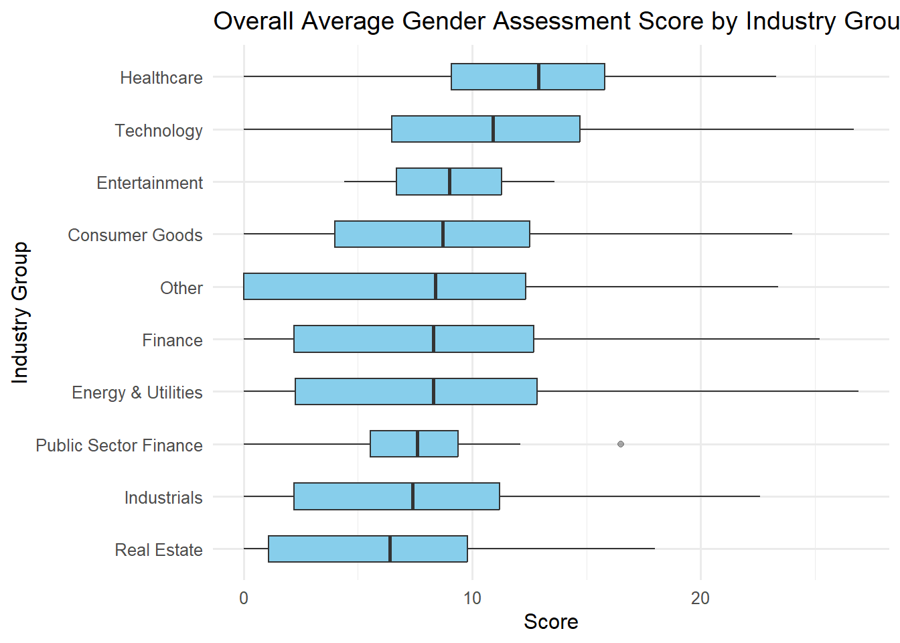
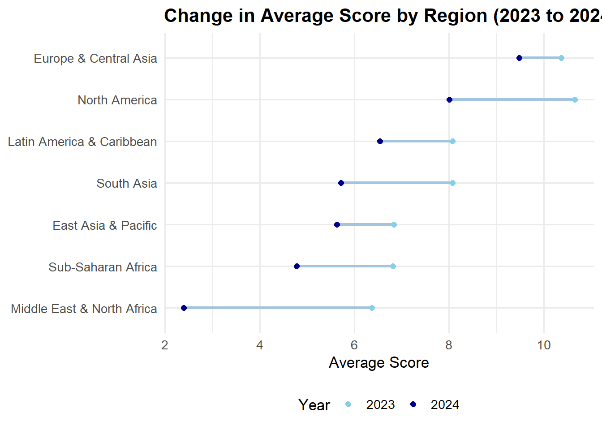
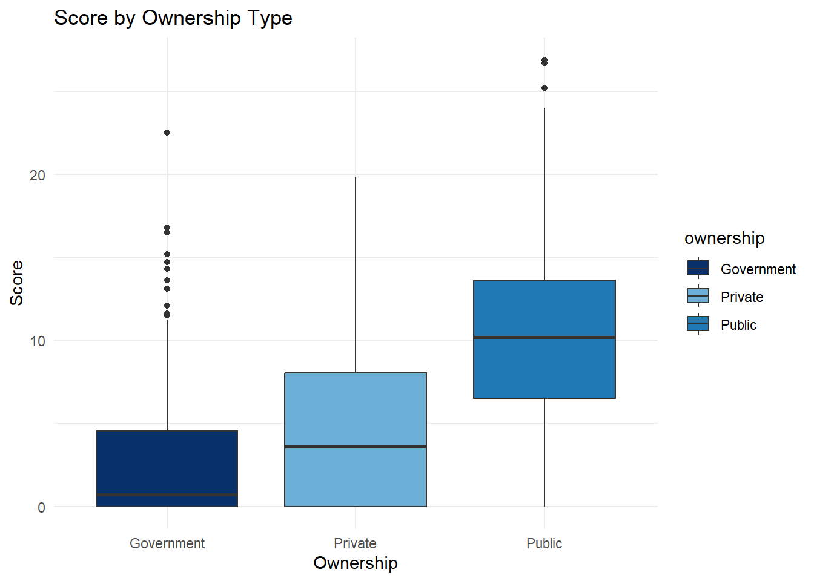

library(diversedata)
library(tidyverse) # includes ggplot2, readr, dplyr
library(janitor) # for data cleaning
library(knitr) # For kable() function
library(car) # For leveneTest()
library(ggthemes) # extra ggplot themes
library(ggalt) # For geom_dumbbell
library(FSA) # For Dunn's testKey Features of the Data set
Each row represents a single company’s gender assessment in a given year and includes organizational details, overall scores, and performance on various gender-related indicators:
company – The name of the company assessed for gender equity practices.
country – The headquarters location of the company, used for geographical grouping.
region – Broader geographical area of the company’s location (e.g., North America, Europe), used for regional comparisons.
industry – Sector to which the company belongs (e.g., Chemicals,Electronics), used to evaluate industry-wise performance.
ownership – Type of ownership structure (e.g., Public, Private), used to study differences in scores by governance type.
year – The year in which the assessment was conducted, allowing for temporal comparisons.
score – The overall gender assessment score reflecting the company’s total performance.
percent_score – The overall gender assessment score expressed as a percentage for easier comparison.
Purpose and Use Cases
This data set supports analysis of:
Gender equity performance across industries, regions, and ownership types.
Temporal trends in corporate gender assessment scores with a focus on changes over time to track progress or setbacks.
The influence of gender-related policies and corporate governance structures by examining how internal practices and ownership models affect outcomes.
The relationship between regulatory environments and gender equity outcomes exploring how regional or national policy contexts align with performance.
Case Study
Objective
Gender equality in the workplace is a critical goal for sustainable and inclusive development. Companies are increasingly being evaluated not only on financial metrics but also on their social and governance performance, including how they support gender equity. This data set offers a standardized assessment of a company’s gender-related policies and practices across the world.
To explore these dynamics, we focus on the following key questions:
What is the average Overall Gender Assessment Score by industry, and which industries have the highest and lowest average scores?
Does ownership type affect gender assessment performance?
By analyzing the score variable across industry and ownership categories, and exploring key gender-related indicators, we aim to identify structural patterns and gaps in corporate gender performance.
Analysis
Loading Libraries
1. Data Cleaning & Processing
gender_data <- genderassessment |>
clean_names() |>
drop_na(score) |>
mutate(
industry = as.factor(industry),
ownership_type = as.factor(ownership)
)
head(gender_data)# A tibble: 6 × 30
company country region industry ownership year score percent_score
<chr> <chr> <chr> <fct> <chr> <dbl> <dbl> <dbl>
1 3M United… North… Chemica… Public 2023 11.3 22
2 Asos United… Europ… Apparel… Public 2023 16.9 32
3 A.P. Moller - Mae… Denmark Europ… Freight… Public 2024 10.9 21
4 ABB Switze… Europ… Capital… Public 2023 12.8 25
5 AbbVie United… North… Pharmac… Public 2023 15.4 30
6 Abercrombie & Fit… United… North… Apparel… Public 2023 10 19
# ℹ 22 more variables: strategic_action <dbl>, gender_targets <dbl>,
# gender_due_diligence <dbl>, grievance_mechanisms <dbl>,
# stakeholder_engagement <dbl>, corrective_action <dbl>,
# gender_leadership <dbl>, development_recruitment <dbl>,
# employee_data_by_sex <dbl>, supply_chain_gender_leadership <dbl>,
# enabling_environment_union_rights <dbl>, gender_procurement <dbl>,
# gender_pay_gap <dbl>, carer_leave_paid <dbl>, childcare_support <dbl>, …2. Exploratory Data Analysis
Average Overall Assessment Score by Industry
industry_stats <- gender_data |>
group_by(industry) |>
summarise(
avg_score = mean(score, na.rm = TRUE),
median_score = median(score, na.rm = TRUE),
sd_score = sd(score, na.rm = TRUE),
n = n()
) |>
arrange(desc(avg_score))
kable(industry_stats, digits = 2, caption = "Average Score by Industry")| industry | avg_score | median_score | sd_score | n |
|---|---|---|---|---|
| Personal & Household Products | 14.69 | 15.60 | 4.64 | 20 |
| Electronics | 12.63 | 13.30 | 5.44 | 55 |
| Pharmaceuticals & Biotechnology | 12.37 | 12.90 | 5.80 | 29 |
| Apparel & Footwear | 11.49 | 10.80 | 5.98 | 68 |
| Banks | 10.73 | 11.20 | 5.80 | 150 |
| IT Software & Services | 10.24 | 10.25 | 5.85 | 34 |
| Retail | 9.71 | 10.45 | 6.40 | 18 |
| Insurance | 9.60 | 10.20 | 5.26 | 71 |
| Motor Vehicles & Parts | 9.54 | 10.70 | 6.23 | 45 |
| Oil & Gas | 9.50 | 10.30 | 5.93 | 97 |
| Capital Goods | 9.38 | 9.80 | 5.99 | 25 |
| Chemicals | 9.23 | 9.80 | 4.71 | 70 |
| Telecommunications | 9.09 | 10.00 | 5.70 | 83 |
| Entertainment | 9.00 | 9.00 | 6.51 | 2 |
| Payments | 9.00 | 9.00 | 9.62 | 2 |
| Food Retailers | 8.93 | 9.10 | 5.39 | 76 |
| NA | 8.28 | 8.40 | 9.58 | 5 |
| Containers & Packaging | 7.53 | 8.00 | 4.59 | 23 |
| Traditional Asset Managers | 7.51 | 8.20 | 5.32 | 63 |
| Food Production | 7.50 | 7.10 | 5.53 | 206 |
| Development Finance Institutions | 7.43 | 7.60 | 4.33 | 15 |
| Utilities | 6.95 | 7.30 | 5.64 | 125 |
| Conglomerates | 6.94 | 7.75 | 6.33 | 18 |
| Postal & Courier Activities | 6.94 | 6.90 | 3.35 | 21 |
| Metals & Mining | 6.86 | 7.35 | 5.62 | 114 |
| Construction Materials & Supplies | 6.81 | 6.90 | 5.33 | 46 |
| Paper & Forest Products | 6.66 | 6.20 | 4.04 | 29 |
| Freight & logistics | 6.60 | 6.50 | 3.91 | 33 |
| Waste Management | 6.51 | 7.25 | 5.70 | 18 |
| Real Estate | 6.38 | 6.00 | 5.16 | 147 |
| Investment Consultants | 6.38 | 5.80 | 6.22 | 5 |
| Construction & Engineering | 5.64 | 5.35 | 5.07 | 56 |
| Passenger Transport | 4.89 | 2.90 | 5.21 | 101 |
| Agricultural Products | 4.24 | 4.25 | 3.60 | 32 |
| Alternative Asset Managers | 3.63 | 2.90 | 3.84 | 21 |
| Sovereign Wealth Funds | 3.18 | 0.50 | 4.80 | 19 |
| Pension Funds | 2.97 | 1.30 | 3.62 | 58 |
Visualization: Average Overall Gender Assessment by Industry Group
gender_data_grouped <- gender_data |>
mutate(industry_group = case_when(
industry %in% c("Apparel & Footwear", "Food Production", "Food Retailers",
"Retail", "Personal & Household Products", "Agricultural Products") ~ "Consumer Goods",
industry %in% c("Banks", "Insurance", "Pension Funds", "Sovereign Wealth Funds",
"Alternative Asset Managers", "Traditional Asset Managers",
"Investment Consultants", "Payments") ~ "Finance",
industry %in% c("Pharmaceuticals & Biotechnology") ~ "Healthcare",
industry %in% c("IT Software & Services", "Telecommunications", "Electronics") ~ "Technology",
industry %in% c("Oil & Gas", "Utilities") ~ "Energy & Utilities",
industry %in% c("Chemicals", "Capital Goods", "Freight & logistics",
"Passenger Transport", "Metals & Mining", "Containers & Packaging",
"Motor Vehicles & Parts", "Postal & Courier Activities",
"Waste Management", "Paper & Forest Products") ~ "Industrials",
industry %in% c("Construction & Engineering", "Construction Materials & Supplies", "Real Estate") ~ "Real Estate",
industry %in% c("Development Finance Institutions") ~ "Public Sector Finance",
industry %in% c("Entertainment") ~ "Entertainment",
TRUE ~ "Other"
))
gender_by_group <- ggplot(gender_data_grouped, aes(x = reorder(industry_group, score, FUN = median), y = score)) +
geom_boxplot(width = 0.5, fill = "skyblue", outlier.alpha = 0.4) + # width < 1 reduces box width
coord_flip() +
labs(
title = "Overall Average Gender Assessment Score by Industry Group",
x = "Industry Group", y = "Score"
) +
theme_minimal(base_size = 12)
gender_by_group
Comparison of Average Overall Gender Assessment Scores Between 2023 vs 2024 by Region
# Add this code before the dumbbell plot
region_wide <- gender_data |>
filter(year %in% c(2023, 2024)) |> # Ensure only these years are included
group_by(region, year) |>
summarise(avg_score = mean(score, na.rm = TRUE)) |>
pivot_wider(
names_from = year,
values_from = avg_score,
names_prefix = "" # Removes automatic "year" prefix
) |>
ungroup()`summarise()` has grouped output by 'region'. You can override using the
`.groups` argument.ggplot(region_wide, aes(x = `2023`, xend = `2024`, y = reorder(region, `2024`))) +
geom_dumbbell(
size = 1.2, # thinner connecting line
colour = "#a3c4dc", # light blue line
colour_x = "#87CEEB", # skyblue for 2023
colour_xend = "#00008B" # dark blue for 2024
) +
# Dummy points to create legend
geom_point(aes(x = `2023`, color = "2023"), size = 2) +
geom_point(aes(x = `2024`, color = "2024"), size = 2) +
scale_color_manual(
name = "Year",
values = c("2023" = "#87CEEB", "2024" = "#00008B")
) +
labs(
title = "Change in Average Score by Region (2023 to 2024)",
x = "Average Score", y = "Region"
) +
theme_minimal(base_size = 13) +
theme(
plot.title = element_text(face = "bold"),
axis.title.y = element_blank(),
legend.position = "bottom"
)Warning: Using the `size` aesthetic with geom_segment was deprecated in ggplot2 3.4.0.
ℹ Please use the `linewidth` aesthetic instead.
3. Gender Assessment Score by Ownership Type
In addition to industry-based analysis, we examine whether ownership structure affects the overall gender performance scores. The following box plot illustrates how scores vary by ownership category
filtered_data <- gender_data |>
subset(!is.na(score) & !is.na(ownership))
ggplot(filtered_data, aes(x = ownership, y = score, fill = ownership)) +
geom_boxplot() +
scale_fill_manual(values = c(
"Public" = "#1f77b4", # blue
"Private" = "#6baed6", # lighter blue
"Government" = "#08306b" # dark blue
)) +
labs(title = "Score by Ownership Type", x = "Ownership", y = "Score") +
theme_minimal()
Hypothesis Testing: Gender Assessment Scores by Ownership Type
We aim to test whether companies with different ownership types have significantly different mean gender assessment scores.
Hypotheses
Null Hypothesis (H₀):
The mean score is the same across all ownership groups.
\[ \mu_{\text{public}} = \mu_{\text{Private}} = \mu_{\text{Government}} \]Alternative Hypothesis (Hₐ):
At least one group has a different mean score.
\(\mu_i \ne \mu_j\)
Assumption checks for ANOVA
Before applying ANOVA to compare gender assessment scores across ownership types, it is essential to verify that the assumptions underlying the test are met.
1. Independence of Observations
- Observations within and across groups must be independent: In our case, this means that each company’s gender assessment score is independent of the others.This assumption is generally satisfied by the dataset design, provided that each company appears only once and that there is no clustering of related firms or repeated measurements. Since our dataset includes one record per company without repeated measures, we consider the independence assumption to be reasonably met.
2. Normality of Residuals
ANOVA assumes that the residuals are normally distributed. We assess this using the Shapiro-Wilk test:
anova_model <- aov(score ~ ownership, data = gender_data)
shapiro.test(residuals(anova_model))
Shapiro-Wilk normality test
data: residuals(anova_model)
W = 0.98844, p-value = 1.423e-11Inference
Since the p-value is less than 0.05, we reject the null hypothesis of normality. The residuals are not normally distributed, violating the normality assumption for ANOVA.
3. Homogeneity of Variances
Another key assumption is that the variance of scores is roughly equal across the ownership types. We use Levene’s Test to assess this:
leveneTest(score ~ ownership, data = gender_data)Warning in leveneTest.default(y = y, group = group, ...): group coerced to
factor.Levene's Test for Homogeneity of Variance (center = median)
Df F value Pr(>F)
group 2 25.558 1.097e-11 ***
1993
---
Signif. codes: 0 '***' 0.001 '**' 0.01 '*' 0.05 '.' 0.1 ' ' 1Inference: As the p-value is well below 0.05, we reject the null hypothesis of equal variances. The assumption of homogeneity of variance is violated.
Since both the normality of residuals and homogeneity of variance assumptions are violated, a non-parametric alternative to ANOVA is more appropriate.
4. Kruskal-Wallis test
To evaluate whether the score differs across different types of business ownership, we use the Kruskal–Wallis test.
Hypotheses
Null Hypothesis (H₀):
The median score is the same across all ownership groups.
\[ \mu_{\text{public}} = \mu_{\text{Private}} = \mu_{\text{Government}} \]Alternative Hypothesis (Hₐ):
At least one group’s median score differs.
\(\mu_i \ne \mu_j\)
Assumptions of the Kruskal-Wallis Test
Ordinal or Continuous Dependent Variable: The variable
scoreis numeric, satisfying this assumption.Independent Groups: Each
business(or observation) belongs to only one ownership type. This ensures group independence.Independent Observations: Each row in the data set represents a unique business entity, so the observations are independent.
kruskal.test(score ~ ownership, data = gender_data)
Kruskal-Wallis rank sum test
data: score by ownership
Kruskal-Wallis chi-squared = 517.7, df = 2, p-value < 2.2e-16- The p-value is small (< 0.05), meaning we reject the null hypothesis (H₀) that all ownership groups have the same median score.
- There are statistically significant differences in
scorebetween at least two ownership types.
Since the test indicates that not all ownership groups are equal, we need to conduct a post-hoc test to identify which specific groups differ.
5. Dunn’s Post-Hoc Test (with Bonferroni Correction)
To determine which ownership groups differ, we conduct Dunn’s test with Bonferroni adjustment for multiple comparisons.
# Run Dunn's test with Bonferroni correction
dunnTest(score ~ ownership, data = gender_data, method = "bonferroni")Warning: ownership was coerced to a factor.Warning: Some rows deleted from 'x' and 'g' because missing data.Dunn (1964) Kruskal-Wallis multiple comparison p-values adjusted with the Bonferroni method. Comparison Z P.unadj P.adj
1 Government - Private -4.232728 2.308732e-05 6.926197e-05
2 Government - Public -18.867414 2.113945e-79 6.341836e-79
3 Private - Public -16.052311 5.507422e-58 1.652227e-57Inference
Pairwise comparisons using Dunn’s test (with Bonferroni correction) indicate statistically significant differences in gender assessment scores across all ownership types:
Government-owned companies have significantly lower scores than both Private and Public companies.
Private companies also score significantly lower than Public companies.
Discussion
This analysis highlights notable disparities in gender assessment performance across industries, ownership types, and regions. Industries demonstrated varying levels of engagement with gender equity, with the Personal & Household Products sector achieving the highest average scores. In contrast, the Pension Funds industry consistently lagged behind, pointing to potential structural or cultural barriers that may impede progress in specific sectors.
Ownership structure played a critical role in performance. Government-owned companies significantly outperformed both privately held and publicly traded firms. In contrast, publicly traded companies, despite their visibility and access to resources, showed relatively poor performance.
Despite the insights provided, this analysis faces some limitations. One key challenge is the variability in data availability and completeness across regions and companies, which may introduce bias. While average scores are useful for summarizing overall trends, they can hide meaningful differences within subgroup like firm size or revenue. Finally, comparing scores across years can be challenging, as changes in how data is reported or delays in reporting may affect the results. This makes it harder to draw strong conclusions about trends over time.